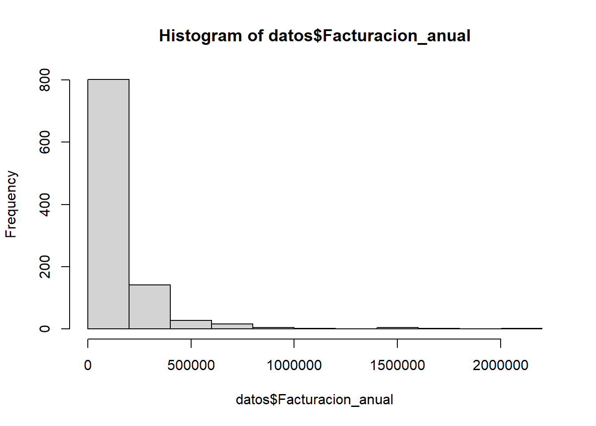
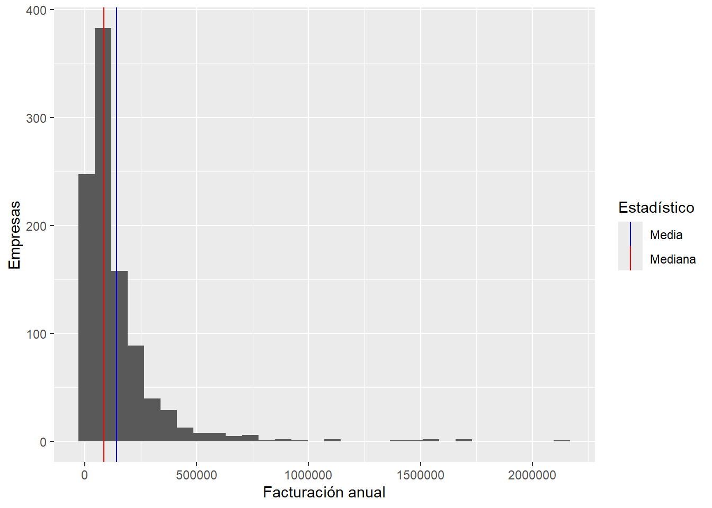
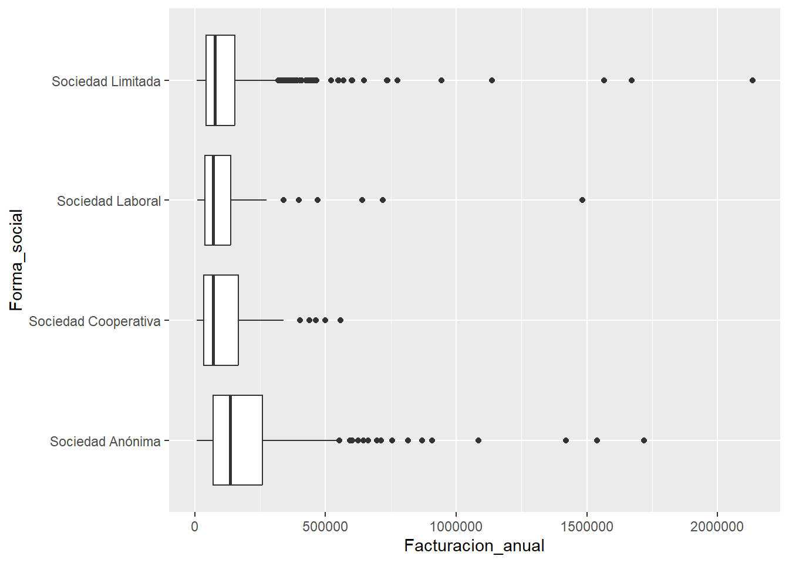

Chapter 7 Práctica UD2 - Estadística descriptiva
7.1 Contexto
Eres el propietario de una empresa del sector digital donde existe mucha competencia. Acabas de recibir una base de datos que contiene información sobre tu empresa (A) y sobre todos tus competidores. Por ello, quieres responder a las siguientes preguntas:
- ¿Cuál fue la media de facturación del sector en el año 2025?
- ¿Representa la media bien la realidad del sector? ¿Qué otra información puede ser relevante?
- ¿Cuál es la media de trabajadores de las empresas del sector?
- Usando la clasificación de microempresa, pequeña empresa, mediana empresa y gran empresa, ¿qué frecuencia tiene cada una en el sector? ¿cuál es la moda?
- ¿Cómo de grandes son las diferencias en capital social entre las empresas?
- ¿En qué percentil de ingresos se encuentra A? ¿Se corresponde con el percentil de capital social?
- ¿Hay diferencias en ingresos según el tipo de sociedad de las empresas? ¿Cuál es el tipo de sociedad que ingresa más?
- ¿Existe correlación entre los ingresos y el número de trabajadores? ¿Cómo es esa correlación?
La base de datos puede descargarse de aquí: 🗃️(enlace)[http://danielpereztr.github.io/datos/empresas_ud2.csv]
7.2 Cargamos los datos y hacemos una descripción inicial de las variables:
library(skimr) # Librería para análisis rápido
datos <- read.csv("empresas_ud2.csv", na = "")
skim(datos)| Name | datos |
| Number of rows | 1000 |
| Number of columns | 5 |
| _______________________ | |
| Column type frequency: | |
| character | 2 |
| numeric | 3 |
| ________________________ | |
| Group variables | None |
Variable type: character
| skim_variable | n_missing | complete_rate | min | max | empty | n_unique | whitespace |
|---|---|---|---|---|---|---|---|
| Empresa | 0 | 1 | 1 | 3 | 0 | 1000 | 0 |
| Forma_social | 0 | 1 | 16 | 20 | 0 | 4 | 0 |
Variable type: numeric
| skim_variable | n_missing | complete_rate | mean | sd | p0 | p25 | p50 | p75 | p100 | hist |
|---|---|---|---|---|---|---|---|---|---|---|
| Facturacion_anual | 0 | 1 | 141910.04 | 190343.58 | 7272.06 | 44377.04 | 83957.24 | 170412.3 | 2133387 | ▇▁▁▁▁ |
| Numero_trabajadores | 0 | 1 | 12.68 | 19.07 | 1.00 | 3.00 | 6.00 | 13.0 | 169 | ▇▁▁▁▁ |
| Capital_social | 0 | 1 | 123289.18 | 328718.14 | 3000.00 | 27771.40 | 60000.00 | 123996.4 | 8297396 | ▇▁▁▁▁ |
7.3 ¿Cuál fue la media de facturación del sector en el año 2025
- La función
skim(datos)ya nos da la respuesta a esto. La media de facturación del sector es de 142 mil € al año.
7.4 ¿Representa la media bien la realidad del sector?
Esto solo lo podremos saber si observamos que los ingresos se distribuyen de forma simétrica en un histograma. En ese caso, la media coincidirá con la mediana. Vamos a comprobarlo:

Claramente, la distribución no es simétrica (está sesgada hacia la derecha). En ese caso, la mediana puede ayudar a conocer mejor los ingresos que están en el centro de la distribución. Esto ya lo conocemos, pues en la tabla anterior se muestra el p50: 84 mil €. * Esto implica que el 50% de las empresas tienen un ingreso menor o igual a 84 mil €.
Podemos representar en el histograma la media y la mediana:
library(ggplot2)
ggplot(datos, aes(Facturacion_anual)) +
geom_histogram() +
geom_vline(aes(xintercept = median(datos$Facturacion_anual), colour = "Mediana")) +
geom_vline(aes(xintercept = mean(datos$Facturacion_anual), colour = "Media")) +
scale_color_manual(values = c("Mediana" = "red", "Media" = "blue")) +
labs(
x = "Facturación anual",
y = "Empresas",
colour = "Estadístico"
)## Warning: Use of `datos$Facturacion_anual` is discouraged.
## ℹ Use `Facturacion_anual` instead.
## Use of `datos$Facturacion_anual` is discouraged.
## ℹ Use `Facturacion_anual` instead.## `stat_bin()` using `bins = 30`. Pick better value `binwidth`.
7.5 ¿Cuál es la media de trabajadores de las empresas del sector?
- La media también la sacamos en la tabla principal, es de 13 trabajadores.
- La clasificación según el tamaño de empresa hay que hacerla manualmente. Vamos a usar la función
ifelse.
datos$tamañoempresa <- ifelse(datos$Numero_trabajadores < 10, "Microempresa", NA)
datos$tamañoempresa <- ifelse(datos$Numero_trabajadores >= 10 & datos$Numero_trabajadores < 50, "Pequeña empresa", datos$tamañoempresa)
datos$tamañoempresa <- ifelse(datos$Numero_trabajadores >= 50 & datos$Numero_trabajadores < 250, "Mediana empresa", datos$tamañoempresa)
datos$tamañoempresa <- ifelse(datos$Numero_trabajadores >= 250, "Gran empresa", datos$tamañoempresa)
table(datos$tamañoempresa)##
## Mediana empresa Microempresa Pequeña empresa
## 55 660 2857.6 Usando la clasificación de microempresa, pequeña empresa, mediana empresa y gran empresa, ¿qué frecuencia tiene cada una en el sector? ¿cuál es la moda?
- Claramente, la moda es microempresa y no hay ninguna Gran empresa.
7.9 ¿Hay diferencias en ingresos según el tipo de sociedad de las empresas? ¿Cuál es el tipo de sociedad que ingresa más?
Podemos responder a esto directamente usando un gráfico de cajas y bigotes:

- Hay diferencias, no sabemos si significativas (esto lo veremos más adelante).
- La sociedad anónima tiene la mayor mediana.